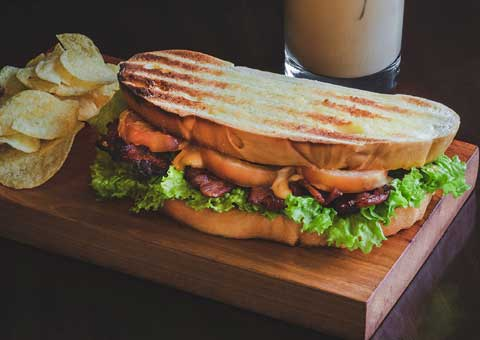

Bacon, lettuce, and tomato sandwich
I love BLTs. They are my favorite sandwich to eat in summer. They are best with fresh tomatoes.
Ingredients
- bread
- cooked bacon
- lettuce
- tomato
- mayonnaise
Directions
- Open bread container and pull out two pieces of bread.
- Toast the bread.
- Cut the tomato into slices.
- Open jar of mayonnaise.
- Put knife into jar of mayonnaise and scoop some out.
- Spread mayonnaise on one side of a piece of toast.
- Repeat for the other piece of toast.
- Place the bacon slices on top of a piece of toast with mayonnaise.
- Put the lettuce and tomato slices on the bacon.
- Top with the other piece of toast.
- Eat.